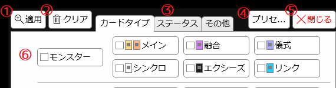
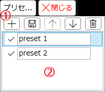
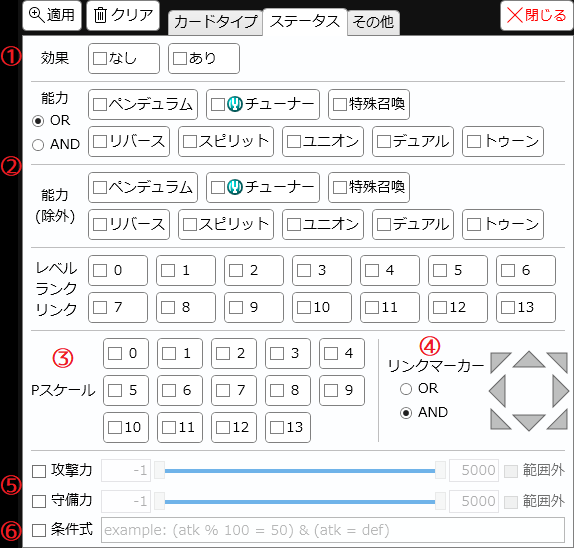
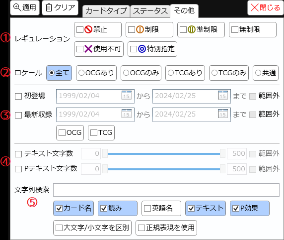
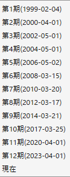
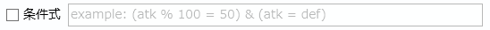

ボタンをクリックすることで開くウィンドウです。
ボタンをクリックすることで開くウィンドウです。説明

-
適用ボタン
- 設定された条件にてカードリストの検索(絞り込み)を実行します。
-
クリアボタン
- 設定されている内容を全て初期化します。
-
絞り込みを解除したい場合、このボタンを押してから「適用」するか、サーチバーの
 ボタンを押してください。
ボタンを押してください。
-
タブ
- 検索条件が種類別にまとめられています。
- タブをクリックする以外に、この部分でマウスホイールを回すことでもタブを切り替えられます。
-
プリセット選択
- クリックすると検索条件プリセットのリストを開きます。

-
項目の操作
-
 : 選択されている項目のすぐ下に、現在の検索条件をプリセットとして追加します。
: 選択されている項目のすぐ下に、現在の検索条件をプリセットとして追加します。
-
 : 選択されているプリセットの内容を、現在の検索条件で上書きします。
: 選択されているプリセットの内容を、現在の検索条件で上書きします。
-
 : 選択されている項目を1つ上に移動します。
: 選択されている項目を1つ上に移動します。
-
 : 選択されている項目を1つ下に移動します。
: 選択されている項目を1つ下に移動します。
-
: 選択されている項目を削除します。
-
-
プリセットリスト
-
 を押すと、そのプリセットの内容を検索ウィンドウに反映します。
を押すと、そのプリセットの内容を検索ウィンドウに反映します。
- テキストボックスでそのプリセットの名前を自由に付けられます。
-
-
閉じるボタン
- 編集の内容を破棄し、このウィンドウを閉じます。
- 検索は実行されません。
- ESCキーを押した際もこのボタンを押した扱いとなります。
-
設定領域
- 種々の検索条件を指定します。
-
チェックボックスを含んでいるボタンは、マウスボタンを押したらそのままドラッグすることでマウスが通過したボタンを一括で設定できます。
- 最初のクリックでチェックを入れた場合はドラッグで一括チェック
- 最初のクリックでチェックを外した場合はドラッグで一括解除
-
指定された特徴を持たないカードは自動的に検索候補から外れます。
- 例えば「属性」欄のボタンに一つでもチェックを入れた場合、属性という特徴を持たない魔法/罠カードは検索から除外されます。
「ステータス」タブ
このタブの内容を一つでも指定した場合、魔法/罠カードは検索から除外されます。
-
効果
- 「なし」にチェックを入れると、効果を持たないモンスターだけがヒットします。
- 「あり」にチェックを入れると、効果モンスターだけがヒットします。
- 両方をチェックした場合は全てのモンスターがヒットします。魔法/罠カードはヒットしなくなります。
-
能力欄
- 上段はその能力を持つモンスター、下段はその能力を持たないモンスターがヒットするようになります。
- 「OR」が選ばれている場合、チェックした能力をいずれか一つでも持っていればヒットします。
- 「AND」が選ばれている場合、チェックした能力の全てを持っている場合のみヒットします。
-
Pスケール
- 一つでも選択すると、ペンデュラムモンスター以外は検索から除外されます。
-
リンクマーカー
- 三角部分をクリックするとその方向のオン/オフが切り替わります。
- 一つでもオンにすると、リンクモンスター以外は検索から除外されます。
- 「OR」が選ばれている場合、オン(赤)にしたマーカーのうちいずれか一つでも持っていればヒットします。
- 「AND」が選ばれている場合、オン(赤)にした全てのマーカーを持つ場合のみヒットします。
- 完全一致で検索したい場合は、「AND」を選んだ上で「レベル/ランク/リンク」の数値も指定してください。
-
攻撃力/守備力
- チェックするとそれぞれの指定範囲に適合するモンスターだけがヒットするようになります。
- テキストボックス上でマウスホイールを回すと1ずつ変更できます。
- スライダーは左側でマウスホイールを回すと下限が、右側でマウスホイールを回すと上限がそれぞれ動きます。
- 攻守の「？」は-1扱いになります。
- 「守備力」にチェックを入れた場合、リンクモンスターは検索から除外されます。
-
条件式
- チェックを入れた上で正しい数式を入れると、その式の結果が真となるカードだけがヒットするようになります。
- 詳しい仕様は下記「条件式について」を参照してください。
「その他」タブ

-
レギュレーション
- 「データベース/レギュレーション」タブで設定されたレギュレーションに適合するカードを絞り込みます。
- 「使用不可」は公式データベースで「公式のデュエルでは使用できません」と書かれたカードがヒットします。
-
ロケール
-
そのカードが発売されているロケールで絞り込みます。
- 「全て」: 全てのカードがヒットします。
- 「OCGあり」: OCG(日本語版)で発売済みのカードがヒットします。TCGに存在するかは考慮しません。
- 「OCGのみ」: OCG(日本語版)で発売済で、TCG(英語版)では未発売のカードがヒットします。
- 「TCGあり」: TCG(英語版)で発売済みのカードがヒットします。OCGに存在するかは考慮しません。
- 「TCGのみ」: TCG(英語版)で発売済みで、OCG(日本語版)では未発売のカード(いわゆる海外先行カード)がヒットします。
- 「共通」: OCG(日本語版)とTCG(英語版)の両方で発売済みのカードがヒットします。
-
そのカードが発売されているロケールで絞り込みます。
-
登場時期

- カード情報の「収録シリーズ」を参照し、その日付が指定日時に適合するカードを絞り込みます。
- 日付はテキストボックスに直接入力するか、カレンダーボタンを押してカレンダーから選べます。
- テキストボックス上でマウスホイールを回すと1日ずつ切り替わります。
- テキストボックス上で右クリックすると各シーズンの開始日を直接選択できます。(右図参照)
- 「初登場」は、「収録シリーズ」のうち最も古い日付がその範囲内であるかを調べます。
- 「最新収録」は「収録シリーズ」のうち最も新しい日付がその範囲内であるかを調べます。
- 「OCG」「TCG」のいずれか一つにチェックを入れた場合は、それぞれのロケールにおける発売日だけを参照します。
-
テキスト文字数
- テキストの長さで絞り込みます。
- OCG(日本語)版が存在するカードの場合は日本語版テキスト、TCG(英語)版のみ存在するカードの場合は英語版テキストが参照されます。
- 「Pテキスト文字数」にチェックを入れた場合、ペンデュラムモンスター以外のカードは検索から除外されます。
-
文字列検索
- サーチバーのテキスト欄と同様のテキスト検索を行います。
- 全角の英数字や一部記号は自動的に半角化されます。
- カード名(及び読みと英語名)については、ひらがなとカタカナは区別されず、一部記号は無視されます。
- この画面では検索対象となるテキストを変更することもできます。
- 「P効果」にチェックを入れてもPモンスター以外のカードは除外されません。
-
「正規表現を使用」にチェックを入れると正規表現での検索が可能です。
-
これにチェックが入っている場合、テキストボックスの内容が正しく正規表現として解釈できない場合には枠が赤くなります。
- 枠が赤い状態で検索を実行した場合、「正規表現を使用」にチェックは入っていない扱いで検索します。
- 全角の英数字や一部記号は自動的に半角化されます。
- これにチェックが入っている場合、カード名などについてもひらがなとカタカナは区別され、記号も無視されません。
-
これにチェックが入っている場合、テキストボックスの内容が正しく正規表現として解釈できない場合には枠が赤くなります。
条件式について

- 検索条件の「条件式」では、任意の数式によって複雑な検索条件を指定できます。
- 「攻撃力」などの範囲指定による絞り込みとは併用できます。
-
テキストボックスの内容が真偽値を表す式として解釈できない場合、枠が赤くなります。
- 枠が赤い状態で検索を実行した場合、条件式による絞り込みは適用されません。
使用例
- atk % 100 = 50: 「攻撃力を100で割った余りが50」であるようなモンスターがヒットします。
- atk - def = 500: 「攻撃力と守備力の差が500」であるようなモンスターがヒットします。
- atk = level * 100: 「攻撃力がレベルの100倍」であるようなモンスターがヒットします。
- atk % 100 = 50 & atk = def: 「攻撃力を100で割った余りが50」かつ「攻撃力と守備力が等しい」であるようなモンスター(〈機巧〉など)がヒットします。
- (atk = 2800 or atk = 2400) & (def = 1000): 「攻撃力が2800または2400」かつ「守備力が1000」であるようなモンスター(いわゆる帝ステータス)がヒットします。
利用可能な表現は以下の通りです。
-
数値
-
aatk: 検索対象カードの「攻撃力」の値に変換されます。
- 攻撃力「？」は-1として扱われます。
-
ddef: 検索対象カードの「守備力」の値に変換されます。
- 守備力「？」は-1として扱われます。
- 条件式にこれを一つでも含めた場合、リンクモンスターは検索から除外されます。
- lvlevel: 検索対象カードの「レベル/ランク/リンク」の値に変換されます。
-
pscale: 検索対象カードの「Pスケール」の値に変換されます。
- 条件式にこれを一つでも含めた場合、Pモンスター以外は検索から除外されます。
- その他一般的な数値表現: 書いた通りの数値になります。負の数や小数も指定可能です。
-
aatk: 検索対象カードの「攻撃力」の値に変換されます。
-
数値演算
- 2つの数値(XおよびYで表される)についての計算を行い、その結果となる数値を表します。
- X + Y: 2つの数値を足した結果の数値になります。
- X - Y: XからYを引いた結果の数値になります。
- X * Y: 2つの数値を掛けた結果の数値になります。
- X / Y: XをYで割った結果の数値になります。小数点以下も計算されます。
- X % Y: XをYで割った余りの数値になります。
- X ^ Y: XのY乗の数値になります。
-
比較演算
- 2つの数値(XおよびYで表される)についての比較を行い、その結果となる真偽値を表します。
- X = YX == Y: 2つの数値が等しい場合に真となります。
- X != Y: 2つの数値が等しくない場合に真となります。
- X < Y: XがYより小さい場合に真となります。
- X <= Y: XがYより小さいか等しい場合に真となります。
- X > Y: XがYより大きい場合に真となります。
- X >= Y: XがYより大きいか等しい場合に真となります。
-
論理演算
- 1つまたは2つの真偽値(PおよびQで表される)についての比較を行い、その結果となる真偽値を表します。
- !P: Pが真でない場合に真となります。
- P and QP & QP && Q: PとQがともに真である場合にのみ真となります。
- P or QP | QP || Q: PとQの片方または両方が真の場合に真となります。
- P xor Q: PとQのうち片方だけが真の場合に真となります。
検索チートシート
特定ステータスを指定するカードを検索する際の指定方法の早見表です。
-
攻撃力と守備力が同じ
- ステータス / 条件式: atk = def
-
〈機巧〉の場合さらに:
- カードタイプ / 種族:「機械族」
-
《赫聖の妖騎士》の場合さらに:
- カードタイプ / 属性:「光」
- カードタイプ / 種族:「魔法使い族」
-
攻撃力800n (《ブラック・ガーデン》)
- ステータス / 条件式: atk % 800 = 0
-
攻撃力または守備力が1600 (《サンダー・ハンド》)
- ステータス / 条件式: atk = 1600 or def = 1600